Kronos(크로노스)는 칭화대 연구팀이 공개한 차트 전용 AI 모델이에요(무료 오픈소스, MIT). 챗GPT가 다음 단어를 고르듯, 지난 캔들(시가·고가·저가·종가·거래량)을 보고 다음 캔들을 이어 그려요. 이 정리본은 공식 문서 기준이에요 — 저희가 직접 돌려 본 결과가 아니고, 영상·정리본의 그림은 전부 공식 README·공식 데모 그림이에요. 과거 차트로 배운 예측이라 틀릴 수 있고, 투자 권유가 아니에요.
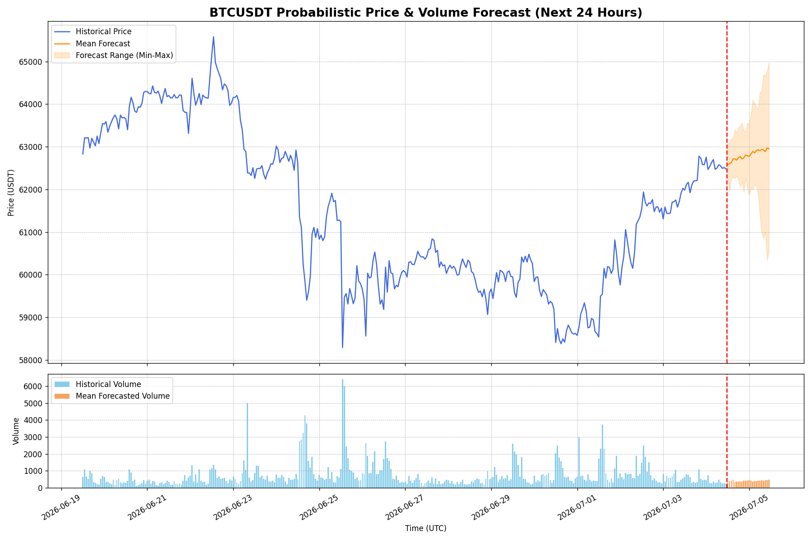
두 단계예요. ① 토크나이저가 캔들 하나하나(가격·거래량)를 '토큰'이라는 조각으로 바꾸고 ② 큰 트랜스포머가 앞 토큰을 보고 다음 토큰을 하나씩 맞혀요 — 챗GPT가 다음 단어를 맞히는 방식과 같아요. 논문 기준 45개 거래소(부록엔 '40여 개')의 캔들 120억 개 넘게(주식·코인·선물·외환, 2024년 6월까지)로 미리 배웠어요. 논문은 AAAI 2026에 채택됐어요.
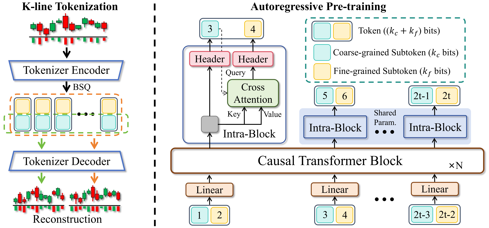
공개된 건 mini(4.1M, 한 번에 2048칸까지 봄)·small(24.7M)·base(102.3M) 세 개예요(둘 다 512칸까지). large(499.2M)는 공개 안 됐어요. 그래픽카드 없는 컴퓨터라면 mini나 small부터. 모델 파일도 MIT예요.
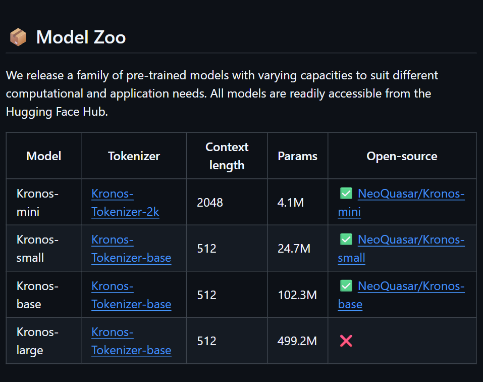
설치 전에 공식 데모 페이지(shiyu-coder.github.io/Kronos-demo)에서 결과 모양을 볼 수 있어요. 비트코인 1시간봉 지난 360시간을 보고 다음 24시간을 Kronos-mini로 30번 그린 결과예요. '오를 확률'은 30번 중 24시간 뒤 가격이 지금보다 높게 그려진 비율이에요. ⚠️ 이 페이지는 2026-07-04 이후 갱신이 멈춰 있어요(지금 시세가 아니에요).
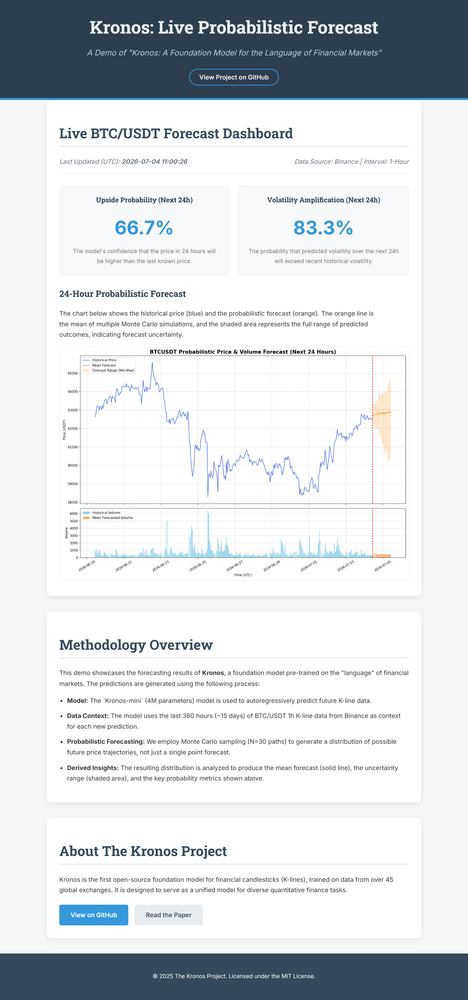
터미널(윈도우는 PowerShell)에서 아래 '복사해서 쓰기'의 명령을 차례로 붙여 넣어요: 저장소 내려받기 → Kronos 폴더로 이동 → pip install -r requirements.txt. 공식 문서 문장은 'Python 3.10+ 설치 후 의존성 설치' 한 줄이에요.
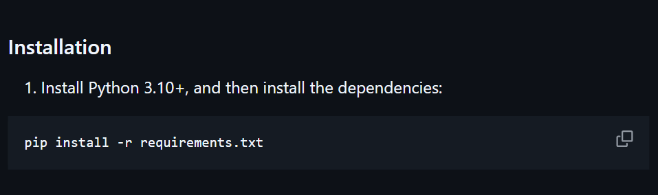
코드를 몰라도 되는 웹 화면(webui)이 들어 있어요. webui 폴더로 가서 웹 화면용 패키지를 깔고(pip install -r requirements.txt) python run.py → 브라우저에서 http://localhost:7070 을 열어요. 포트가 이미 쓰이고 있으면 app.py의 포트 번호를 바꾸라고 공식 안내에 적혀 있어요.
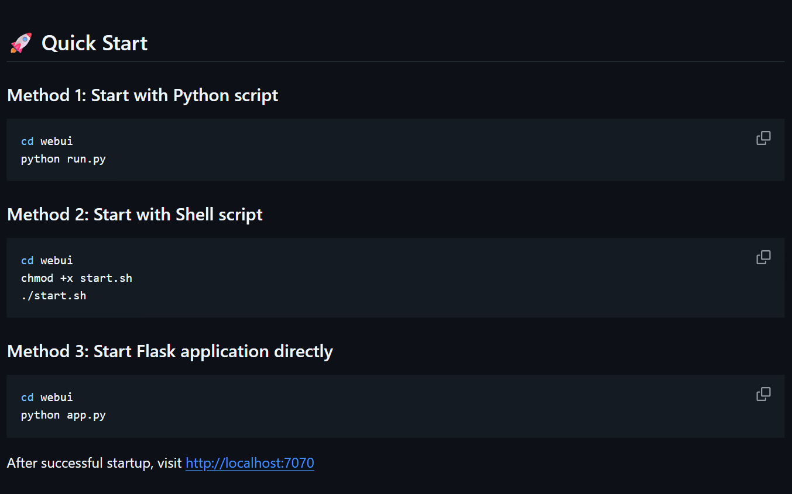
① Kronos 폴더 안에 data 폴더를 만들고 내 CSV를 넣어요(웹 화면이 그 폴더를 읽어요 — webui/app.py). ② 웹 화면에서 파일 고르기 → 모델과 계산 장치(CPU 등) 고르기 → 설정값 → 400+120칸 구간을 슬라이더로 고르기 → 예측 버튼. 칸 이름: open·high·low·close(필수), volume(선택), 시각 칸은 timestamps·timestamp·date 중 하나.
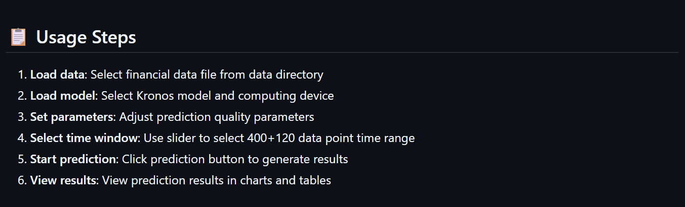
온도(T)는 얼마나 들쭉날쭉하게 그릴지, top_p는 얼마나 다양한 갈래를 볼지, 샘플 수는 몇 번 그려서 평균 낼지예요. 웹 화면 안내 권장값: 온도 1.2~1.5, top_p 0.95~1.0, 샘플 2~3. (README 코드 예시 기본값은 T=1.0, top_p=0.9, sample_count=1.) 같은 설정이라도 돌릴 때마다 조금씩 달라질 수 있어요 — 확률로 뽑아 그리는 방식이라서요.
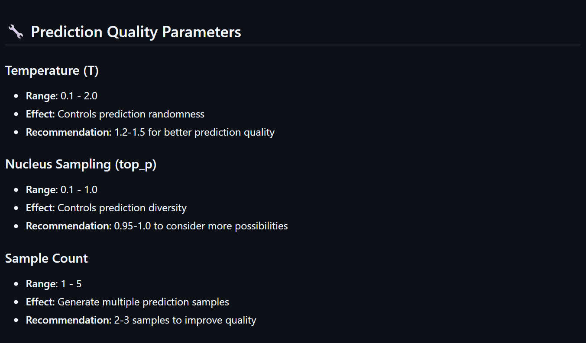
웹 화면은 지난 400칸 뒤의 120칸을 예측해 그리고, 그 구간의 실제 120칸이 파일에 있으면 같이 겹쳐 보여 주고 가격 차이·오차를 계산해 줘요. 그래서 이렇게 쓰는 게 좋아요: 이미 지난 구간을 골라 '모르는 척 맞혀 보게' 한 뒤 실제와 비교 → 내 종목·내 주기에서 얼마나 빗나가는지 먼저 보기. 한 줄 예측보다 여러 번 그린 범위(샘플 수↑)로 보세요.
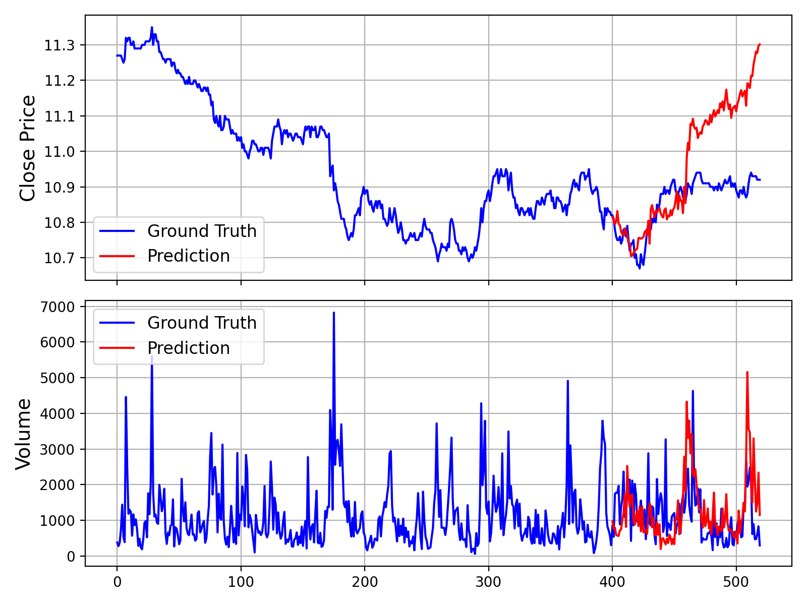
① 한 번에 볼 수 있는 길이가 512칸(mini는 2048칸)이에요. ② 논문 성능(예: 가격 방향 순위 맞힘 RankIC가 기존 최고 시계열 기초 모델보다 93% 좋음)은 논문이 정한 시험 조건(2024년 7월 이후 구간, 추가 학습 없이)의 수치예요. ③ 논문의 모의 투자는 중국 A주 백테스트이고 실제 거래가 아니에요. ④ README는 미세조정 예시를 '시연용, 실전 매매 시스템이 아님'이라고 밝히고, 실전엔 위험 요인 제거·거래비용·슬리피지까지 따져야 한다고 적었어요.
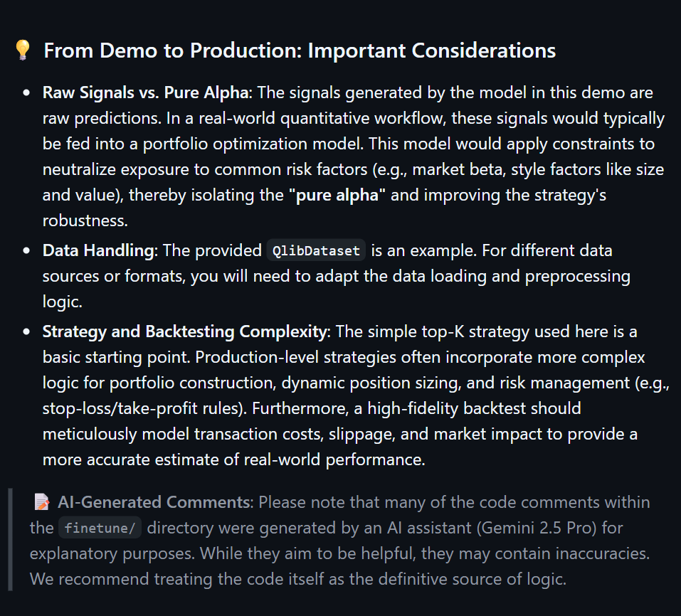
쓰기 좋은 때: 차트 예측 AI가 어떻게 그리는지 직접 보고 싶을 때, 지난 구간으로 맞혀 보기·비교를 해 보고 싶을 때, 파이썬으로 연구·공부할 때. 안 맞는 때: 이 결과만 보고 사고팔 때, 파이썬 설치가 부담될 때(공식 데모 페이지만 보기), 갑작스러운 뉴스·공시처럼 차트에 없는 일이 큰 영향을 줄 때.
공식 예시(examples/prediction_example.py)는 5분봉 기록 파일에서 ① 400칸을 보여 주고 ② 다음 120칸을 그리게 한 뒤 ③ 실제와 겹친 그림(위 공식 예시 그림)을 만들어요. 웹 화면도 같은 400+120 구간이에요. 거래량·거래대금 없이 가격만 있는 파일은 prediction_wo_vol_example.py가 예시예요.
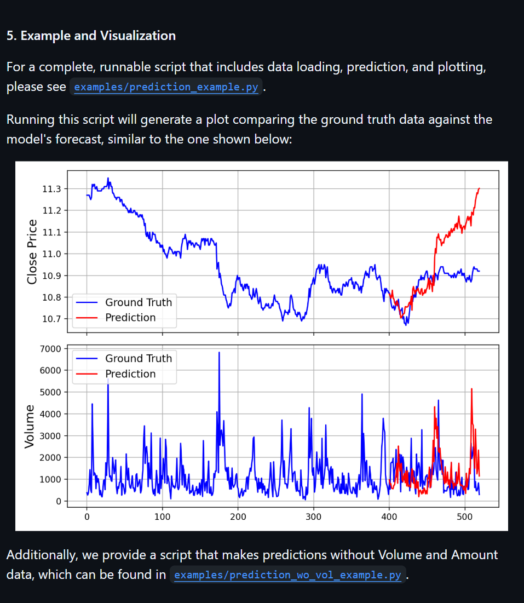
터미널에서 — git이 없으면 깃허브 Code › Download ZIP
git clone https://github.com/shiyu-coder/Kronos.git cd Kronos pip install -r requirements.txt
Kronos 폴더에서 → 브라우저로 http://localhost:7070
cd webui pip install -r requirements.txt python run.py
내 파일 맨 윗줄 — volume·amount는 없어도 됨
timestamps,open,high,low,close,volume,amount
Kronos 폴더에서 — 파일 이름·길이는 내 것으로
import pandas as pd
from model import Kronos, KronosTokenizer, KronosPredictor
tokenizer = KronosTokenizer.from_pretrained("NeoQuasar/Kronos-Tokenizer-base")
model = Kronos.from_pretrained("NeoQuasar/Kronos-small")
predictor = KronosPredictor(model, tokenizer, max_context=512)
df = pd.read_csv("./data/내파일.csv")
df['timestamps'] = pd.to_datetime(df['timestamps'])
lookback, pred_len = 400, 120
x_df = df.loc[:lookback-1, ['open', 'high', 'low', 'close', 'volume', 'amount']]
x_ts = df.loc[:lookback-1, 'timestamps']
y_ts = df.loc[lookback:lookback+pred_len-1, 'timestamps']
pred_df = predictor.predict(df=x_df, x_timestamp=x_ts, y_timestamp=y_ts, pred_len=pred_len, T=1.0, top_p=0.9, sample_count=1)
print(pred_df.head())설치 없이 결과 모양만 — 2026-07-04 이후 갱신 멈춤
https://shiyu-coder.github.io/Kronos-demo/
도움이 되셨다면
@ai.antenna.kr
에서 바로 쓰는 AI 활용법을 계속 올립니다.